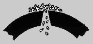
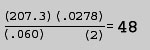

Slotting
Oil Well Liners/Water Well Casing- Straight and Under-cut Slots
- Sizes: 1" through 22"
This was the first type of slot manufactured. It has straight sides with equal width throughout the wall of the casing. This type of slot is more readily plugged by formation sand than keystone slots.
When slots plug with sand grains, inflow capacity is reduced, which can severely restrict well performance. Straight Slotting Operators often attempt to restore productivity by hydro-washing the slots.
Keystone or Undercut Slotting Keystone or under-cut slots minimize slot plugging and improves the ability of the sand grains to bridge across the outside opening of the slot, thereby improving sand control effectiveness. As shown in the graphic below, keystone slots have narrower openings on the outside surface of the casing than on the inside. As a result, sand grains that pass through the outside opening will pass through rather than wedge inside the slot.
Keystone slots have a "V" cross section, and can be cut up to 15 degrees included angle. Field experience has shown that 6 degrees included angle is usually sufficient for good sand control. Since the angle of undercut start at the extreme outer edge of the casing, there is ample metal thickness to resist erosion.
In addition to being less susceptible to clogging or plugging, under-cut slots also minimize pressure drop, thereby improving well performance, and increasing production and reserves.
Choosing a Slotting PatternPipe is often slotted with an even number of rows unless otherwise specified. In addition, rows are generally staggered in order to preserve pipe strength.
Usual practices are:
- 1 1⁄2" length slots (or I.D.) for slot widths less than 0.030"
- 2" length slots (I.D.) for slots widths greater than 0.030
- All slots are spaced on 6" longitudinal centers
The number of slots per foot is determined by calculating the number required to achieve about 3% open area of the outer surface of the pipe to be slotted.
The following formulas and examples illustrate how to determine the number of slots per foot.
No. slots/ft = AC⁄WL
Where:
A = O.D. surface area per foot of pipe(sq. in./ft.) from Table A
C = desired percet open area, as desired by customer
W = slot width in thousands of an inch, based on sand analysis
L=Slot length measured on I.D. in inches.
Example- A=207.3 sq. in/ft (5 1⁄2" O.D.)
- C=2.78 percent open area
- W=0.60" slot width
- L=2" slot length on I.D.
- No. slots/ft=
Contact us for additional information
Important Notice:On 6" longitudinal centers, the number of slots per foot is always twice the number of rows of slots around the circumference. Thus, the 48 slots per foot in the example above will require 24 rows.